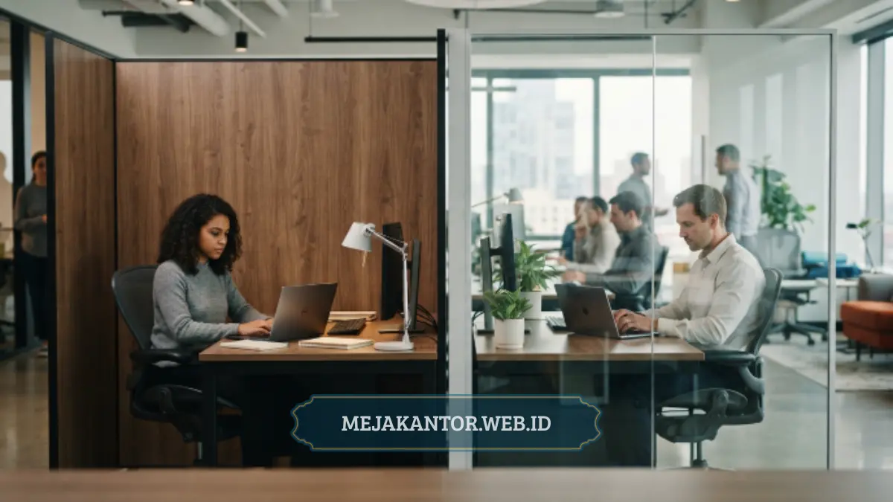

Material partisi workstation yang umum digunakan di kantor modern meliputi particle board berlapis HPL, kaca tempered dengan rangka aluminium, dan panel akustik berbahan kain berpori khusus.
Masing-masing opsi material ini memiliki karakteristik daya tahan, estetika tampilan, dan performa redam akustik yang berbeda secara signifikan untuk kenyamanan kerja harian.
Pemilihan material yang tepat berpengaruh langsung pada kenyamanan tim kerja, citra visual kantor di mata klien, serta durabilitas jangka panjang inventaris furnitur perusahaan.
- Partikel board HPL menawarkan variasi warna luas dengan harga relatif terjangkau.
- Kaca tempered memberi kesan modern dan memaksimalkan cahaya alami.
- Panel akustik berbahan kain efektif meredam kebisingan ruang kerja.
- Kombinasi material sering digunakan untuk menyeimbangkan privasi dan pencahayaan.
- Pemilihan material sebaiknya disesuaikan dengan fungsi ruang dan anggaran.
Daftar Isi Artikel
- Apa Itu Material Partikel Board Berlapis HPL?
- Bagaimana Karakteristik Kaca Tempered untuk Partisi Workstation?
- Apa Fungsi Panel Akustik Berbahan Kain pada Partisi Workstation?
- Bagaimana Kombinasi Material Digunakan pada Desain Partisi Modern?
- Bagaimana Cara Menyesuaikan Material dengan Fungsi Ruangan?
- Apa Perbedaan Daya Tahan Antar Material Partisi Workstation?
- Konsultasi Pemilihan Material Partisi Terbaik
Apa Itu Material Partikel Board Berlapis HPL?
Partikel board berlapis High Pressure Laminate (HPL) adalah material dasar olahan serpihan kayu yang dipadatkan dengan tekanan tinggi dan dilapisi laminasi sintetis tahan gores.
Material ini banyak dipilih karena harganya relatif terjangkau serta menyediakan pilihan corak tekstur serat kayu alami, pola marmer modern, hingga warna solid polos elegan.
Permukaan lapisan HPL juga sangat praktis dirawat, mudah dibersihkan dari tumpahan cairan, dan tahan terhadap goresan gesekan perlengkapan kantor harian karyawan.
Bagaimana Karakteristik Kaca Tempered untuk Partisi Workstation?
Kaca tempered untuk partisi workstation adalah kaca struktural yang diproses melalui perlakuan panas ekstrem lalu didinginkan cepat untuk melipatgandakan kekuatan mekanisnya.
Kaca ini jauh lebih aman dibandingkan kaca biasa karena jika terjadi benturan ekstrem yang memecahkannya, ia akan hancur menjadi serpihan butiran kecil tanpa sisi runcing tajam.
Partisi berbahan kaca tempered umumnya dikombinasikan dengan lis rangka aluminium kokoh guna menyalurkan pencahayaan alami serta menghadirkan nuansa visual lapang tanpa sekat pekat.
Apa Fungsi Panel Akustik Berbahan Kain pada Partisi Workstation?
Panel akustik berbahan kain berfungsi menyerap rambatan gelombang suara di sekitar meja kerja, sehingga secara efektif menekan kebisingan gema di ruang kantor terbuka.
Struktur material ini menggunakan lapisan busa peredam densitas terukur yang dibalut kain fabric woven bertekstur lembut dengan pilihan palet warna variatif.
Penggunaan panel ini sangat direkomendasikan untuk ruang kerja dengan intensitas percakapan telepon tinggi, seperti divisi customer relation maupun telemarketing.

Bagaimana Kombinasi Material Digunakan pada Desain Partisi Modern?
Desain partisi workstation kontemporer umumnya memadukan panel padat HPL pada bagian bawah meja dengan kaca tempered bening atau frosted sandblast di bagian atasnya.
Pendekatan modular ganda ini sukses menyeimbangkan privasi posisi duduk karyawan dari koridor lalu lintas dengan kelancaran sirkulasi udara dan cahaya ruangan.
Beberapa konsep rancangan bahkan menyisipkan strip panel kain pinboard di tengah agar karyawan leluasa menempelkan memo kerja tanpa merusak permukaan furnitur.
Bagaimana Cara Menyesuaikan Material dengan Fungsi Ruangan?
Penyesuaian material dilakukan dengan mempertimbangkan tingkat privasi divisi kerja, tingkat kebisingan aktivitas harian, serta identitas citra yang ingin ditonjolkan perusahaan.
Ruang tim akuntansi atau legal yang membutuhkan kerahasiaan dokumen lebih ideal menggunakan panel solid HPL tinggi berpadu busa insulasi suara di dindingnya.
Sebaliknya, area kerja tim kreatif pemasaran lebih tepat memakai sekat rendah dominasi kaca terbuka untuk memudahkan koordinasi cepat antarsesama rekan kerja.
Apa Perbedaan Daya Tahan Antar Material Partisi Workstation?
Daya tahan material partisi workstation dipengaruhi oleh ketebalan profil bahan, kualitas lapisan laminasi proteksi, serta kebiasaan perawatan inventaris oleh para staf pengguna.
Panel HPL bermutu tinggi mampu bertahan hingga belasan tahun tanpa mengalami pemudaran warna atau pembengkakan jika terlindung dari paparan rembesan air terus-menerus.
Sementara rangka aluminium dan kaca tempered praktis tidak terpengaruh oleh kelembapan ruangan ber-AC, menjadikannya opsi paling stabil dari sudut pandang korosi fisik.
Konsultasi Pemilihan Material Partisi Terbaik
Setiap opsi material partisi memiliki keunggulan fungsional masing-masing. Kombinasi yang proporsional akan menghasilkan ruang kerja yang tidak hanya estetis, tetapi juga ergonomis dan tahan lama.
Pemilihan material yang tepat sejak awal akan mengoptimalkan efisiensi alokasi anggaran investasi furnitur kantor Anda tanpa kekhawatiran biaya renovasi dini.
Butuh rekomendasi jenis material partisi workstation yang paling pas untuk kantor Anda? Hubungi tim mejakantor.web.id sekarang untuk konsultasi sampel bahan dan penawaran terbaik.

Mega Anggun (Ega)
Penulis Konten & Spesialis Penataan Interior Kantor. Berpengalaman dalam memberikan tips ergonomi dan memilih furnitur terbaik untuk menunjang produktivitas kerja.